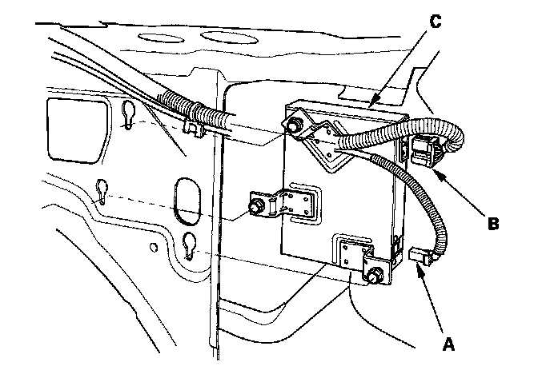

XM Receiver Removal/Installation
XM Receiver Removal/Installation1. Open the trunk lid and remove the right trunk side trim panel.

2. Disconnect the antenna 1P Connector (A) and 14P connector (B) from the XM receiver (C).
3. Loosen the three bolts, and remove the XM receiver.
4. Install in the reverse order of removal.